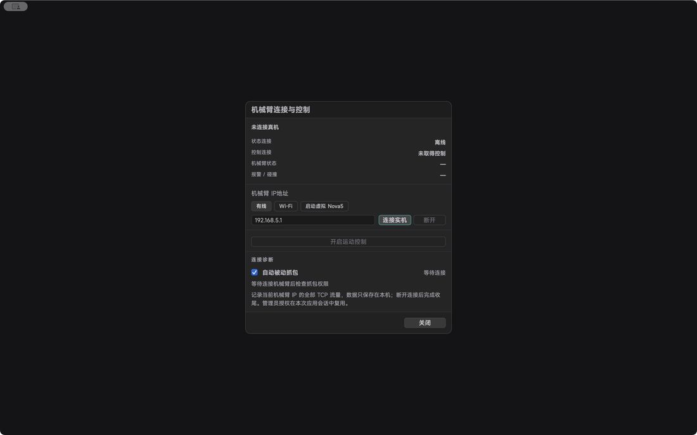

Features in detail / Troubleshooting and wrap-up: read first, then act
Troubleshooting and wrap-up: read first, then act
Most refusals tell you why in the run messages.
Read the messageThe top bar states the concrete reason and links to the setting that fixes it.
Cannot connectCheck cabling, subnet and address — do not just assume the default IP.
Connected, no motionCheck licence, model, alarms and whether the arm is stationary.
Buttons greyed outWait for the calculation, or stop playback and input first.
Alarm cleared, still lockedThe local unverified state needs its own check.
Normal wrap-upStop input, stop motion, then power down.
Closing a window, losing the network or losing focus is never a substitute for an on-site E-stop.

Describes CineArm v0.1.46.